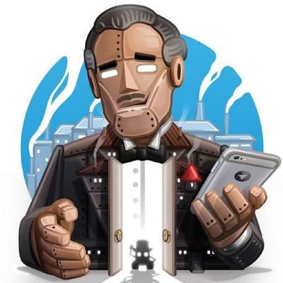

Guardgram configuration in v0.0.1-07042021 of ESP32-CAM
you need to put manually
Telegram bot token and Telegram User ID in guardgram_telegrambot.h
WiFi Credentials in guardgram_wifi.h
How to get Telegram Bot Token

To take you one Telegram Bot Token you need to create a Telegram Bot. Open Telegram App, then Search for @botfather, or open t.me/botfather.
When botfather opened, click start button, then write or choose /newbot and follow the instructions to create your bot, you will give it a name and username. If your bot is successfully created, you’ll receive a message with a link to access the bot and the bot token, like this:
Done! Congratulations on your new bot. You will find it at t.me/xxxxxxxx. You can now add a description, about section and profile picture for your bot, see /help for a list of commands. By the way, when you've finished creating your cool bot, ping our Bot Support if you want a better username for it. Just make sure the bot is fully operational before you do this.
Use this token to access the HTTP API:
XXXXXXXXXX:XXXXXXXXXXXXXXXXXXXXXXXXXXXXXXXXXXX
Keep your token secure and store it safely, it can be used by anyone to control your bot.
For a description of the Bot API, see this page: https://core.telegram.org/bots/api
Your bot token is: XXXXXXXXXX:XXXXXXXXXXXXXXXXXXXXXXXXXXXXXXXXXXX
How to get User ID
Anyone has your bot username can control your Guardgram, to make sure that your Guardgram authorized you only to control it, you need to put your Telegram User ID to Guardgram configuration.
To get it, open Telegram app, search for @IDBot or open this link t.me/myidbot. type /getid. You will get a reply back with your user ID.